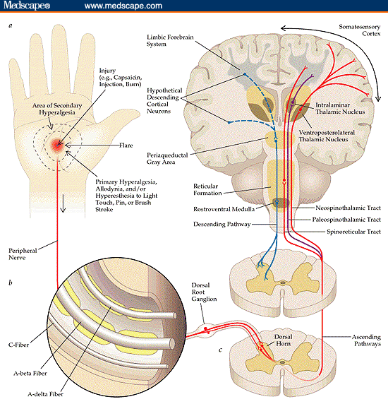
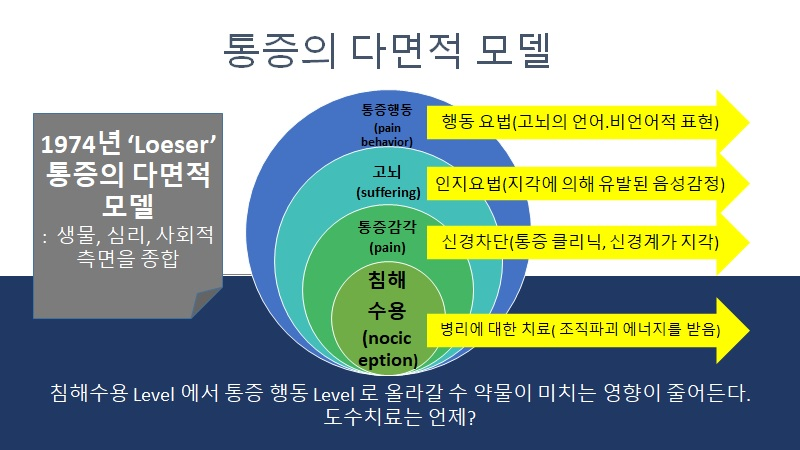

그렇다면 근골격계 통증의 발생원인은 무었일까요? 또 해결방법에는 어떤것들이 있을까요?
통증은 우리몸에 있는 수용기를 통해 입력된 정보입니다. 자극된 수용기는 신경과 척수를 통해 뇌로 가며 정보가 처리되는 것이지요.
그러나 반드시 입력된 정보에 의해서만 발생하는 것은 아닙니다.

예를 들면 환상통이 있습니다. 이미 사지가 존재하지않지만 두뇌의 잘못된 정보처리에 의해 통증이 있다고 느끼는 것입니다.
우리는 이 사실에서 통증이란 다양한 원인들에 의해 발생할수 있다는 아이디어를 얻을수 잇엇습니다. 그렇다면 이제 통증을 어떻게 관리해야할까요?
'지피지기면 백전백승''이라는 말이있는데요. 통증을 무엇인지 먼저 이해한다면 통증을 다양한 방법으로 관리 할수 있을것입니다. 우리는 바늘에 찔려도 아픔을 느끼고 사랑하는 연인과 실연에 의해서도 아픔을 느낌니다.
때로는 고뇌등의 정신적 활동에 의해서도 아픔을 느끼는데요.
IASP에서는 통증을 "실제 또는 잠재적 조직 손상과 관련된 불쾌한 감각 및 감정적 경험, 또는 이러한 손상으로 설명된다."으로 정의합니다(International Association for the Study of Pain, 2014).
이렇듯 통증은 다양한 원인에 의해 표현되어집니다. 아래의 그림은 1974년도 "Loeser"의 통증의 다면적 모델입니다.

침해수용 수준에서 통증행동 나타날수록 원인은 더욱 광범위해지고 치료 또한 다양해 지는 것을 볼수 있습니다.
결국 우리가 접근 해야하는 방법을 고를 때 사회적, 심리적, 생리적 또는 생체적 상태 맞게 하는 것이 더욱 올바는 것이 아닐까 생각합니다.
'Neuromatrix' 더 궁금하시다면 이곳을 클릭해주세요.